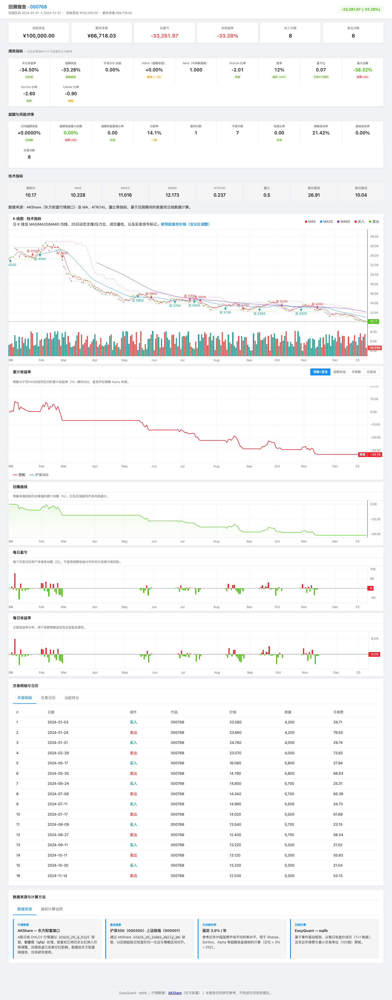
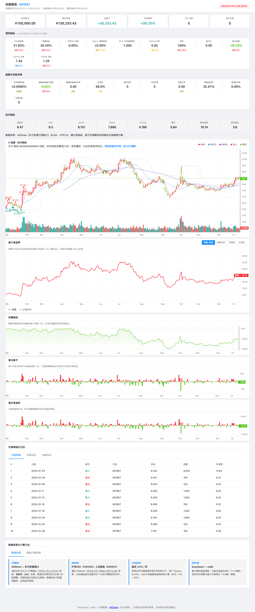

Tutorial 03: 回测验证¶
深入理解回测结果，解读报告和图表，判断策略是否真的有效。
前置： Tutorial 00 · 报告字段全书： doc/reports_and_metrics.md · FAQ： doc/FAQ.md
目录¶
1. 回测是什么¶
回测（Backtesting） 是把你的交易策略用历史数据"回放"一遍，看看如果当时真的按照这个策略交易，结果会怎样。
回测的作用¶
- 验证想法：你觉得有效的策略，真的能赚钱吗？
- 发现缺陷：策略有没有你没想到的边界情况？
- 参数选择：哪个参数组合更合理？
- 建立信心：在投入真金白银之前，有一个量化的评估
回测不能告诉你什么¶
- 未来一定能赚钱：历史表现不等于未来收益
- 精确的盈利金额：回测有各种偏差（滑点、流动性等）
- 策略在所有市场环境都有效：牛市有效的策略在熊市可能失效
2. 回测能告诉你什么¶
运行回测后，你会得到一组核心指标：
| 指标 | 含义 | 参考标准 |
|---|---|---|
| 总收益率 | 回测期间的总盈利/亏损百分比 | 跑赢基准（沪深300）为好 |
| 年化收益率 | 折算为每年的收益率 | > 10% 为合格，> 20% 为优秀 |
| 年化波动率 | 收益的波动幅度 | 低一些更好（< 25% 为佳） |
| 夏普比率 | 每承受一单位风险，获得多少超额收益 | > 1 为好，> 2 为优秀 |
| 最大回撤 | 从最高点到最低点的最大亏损幅度 | 越小越好（< 15% 为佳） |
| 索提诺比率 | 类似夏普，但只考虑下行波动 | > 1 为好 |
| Alpha | 跑赢基准的超额收益 | 正数为好 |
| Beta | 相对大盘的敏感度 | 接近 1 = 跟随大盘 |
| 胜率 | 在 HTML 中可能对应「日胜率」或「交易胜率」，含义不同 | 见下文与 报告与指标详解 |
说明：
analyze_returns返回的win_rate_daily为按交易日统计的胜率；win_rate_trade为完整买卖配对后的胜率。二者不可直接比较数值高低来判断策略好坏。
2.1 仓库内报告示例（reports/）¶
真实回测会在仓库根目录的 reports/ 下写出四套文件（.html / .png / .md / .json）。文件名带时间戳；带后缀的（如 _19_localdata）通常对应示例脚本里的 report_suffix 或脚本说明。
推荐阅读： 仓库内 reports/README.md 列出了与示例脚本对应的对照表。下面 HTML 截图与其中 backtest_20260511_234245_19_localdata.html 为同一次运行（示例 19_local_data_backtest.py）；副本放在 tutorials/assets/ 便于在网页里直接显示，你本地学习时请同时用浏览器打开同名的 .html 对照 报告与指标详解。

同一组结果还可打开：
../reports/backtest_20260511_234245_19_localdata.html（仓库根下reports/，交互式报告）- 若你尚未生成：在仓库根执行
python examples/19_local_data_backtest.py，再在reports/中找到最新生成的*_19_localdata.*。
抽象「策略 vs 基准」折线示意见仍保留：assets/sample_equity_vs_benchmark.svg。
对照 HTML 页眉与指标卡片读数：打开上节同名 .html 后，按 doc/reports_and_metrics.md 第 2.8 节逐条对照（与上 HTML 截图同源示例）；若图区空白，多为 CDN 被拦，见 FAQ。
2.2 不同策略的回测报告长什么样？¶
同一个框架，不同策略的报告 结构相同、数值不同。下面用 6 个已跑通的示例展示：打开各脚本对应的 .html，可以看到相同的页面结构、截然不同的指标卡片数值。
布林带均值回归（Example 14，股票 601088 中国神华）¶

结果：+57.77%，交易 8 笔。布林带策略在震荡市表现优异——价格触及下轨买入、上轨卖出，天然的低买高卖逻辑。
MACD 趋势 + 成交量确认（Example 15，股票 600536 中国软件）¶

结果：+103.48%，交易 16 笔。科技股波动大，MACD 金叉配合放量确认，能较好地捕捉趋势启动点。
网格交易（Example 17，股票 601857 中国石油）¶

结果：+30.25%，交易 10 笔。网格适合低波动、有明确价格区间的股票——在区间内反复"低吸高抛"。
多因子选股（Example 16，10 只股票池）¶

结果：+5.19%，交易 135 笔。多因子模型每周从 10 只股票中选出动量/成交量/波动率综合得分最高的 3 只，高频换手。
选股策略界面（Example 22，14 只股票池）¶

结果：+16.96%，持有 5 只股票。基于 PE 低估值选股 + 月度调频，买入后持有至期末。Brinson 归因显示配置效应 +2.84%、选股效应 +2.84%。
组合回测（Example 12，5 只股票等权）¶

结果：-25.69%，交易 52 笔。动量策略在本期内表现不佳，说明"追涨杀跌"在某些市场环境中会反复亏损。
阅读建议： 用浏览器逐个打开上述对应的 .html 文件（见 reports/README.md），观察相同页面结构下，不同策略的指标卡片、K 线、回撤曲线、成交表的差异。
3. 解读回测报告¶
3.1 运行回测生成报告¶
from eqlib import *
def initialize(context):
g.security = '601390'
set_benchmark('000300.XSHG')
set_order_cost(OrderCost(
open_tax=0, close_tax=0.001,
open_commission=0.0003, close_commission=0.0003,
min_commission=5,
))
run_daily(market_open, time='every_bar')
def market_open(context):
hist = attribute_history(g.security, 25, '1d', ['close'])
if hist.empty or len(hist) < 20:
return
ma5 = hist['close'].tail(5).mean()
ma20 = hist['close'].mean()
price = hist['close'].iloc[-1]
if price > ma5 > ma20:
if g.security not in context.portfolio.positions:
order_value(g.security, context.portfolio.available_cash)
log.info('BUY %s @ %.3f' % (g.security, price))
elif price < ma5 < ma20:
if g.security in context.portfolio.positions:
order_target(g.security, 0)
log.info('SELL %s @ %.3f' % (g.security, price))
record(price=price, ma5=ma5, ma20=ma20)
result = run_strategy(
initialize,
start_date='2024-01-01',
end_date='2024-12-31',
starting_cash=100000,
benchmark='000300.XSHG',
securities=['601390'],
)
3.2 交互式 HTML 报告¶
用浏览器打开 reports/backtest_*.html（无需本地 Web 服务器）。自上而下通常为：摘要 → 指标卡片（年化收益、夏普、最大回撤、Alpha/Beta 等，可点击看释义）→ K 线与技术指标 → 累计收益率（策略 vs 基准）→ 回撤 → 每日盈亏 / 每日收益率 → 成交、持仓等标签页。
各字段与 analyze_returns 字典键的对应关系见 报告与指标详解。仓库内已有一份示例导出索引，便于对照真实 HTML/PNG：reports/README.md。
3.3 Markdown 报告¶
文件路径：reports/backtest_YYYYMMDD_HHMMSS.md
# Backtest Report: 601390
## Summary
- **Period**: 2024-01-01 to 2024-12-31
- **Initial Capital**: 100,000.00
- **Final Value**: 108,234.56
- **P&L**: +8,234.56 (+8.23%)
- **Buy Orders**: 6
- **Sell Orders**: 5
## Trade Log
| # | Date | Action | Security | Price | Amount | Commission |
|---|------|--------|----------|-------|--------|------------|
| 1 | 2024-01-15 | BUY | 601390 | 4.850 | 20,618 | 29.80 |
| 2 | 2024-03-20 | SELL | 601390 | 5.120 | 20,618 | 31.75 |
| 3 | 2024-04-10 | BUY | 601390 | 5.050 | 20,500 | 29.62 |
...
重点关注：
- P&L 盈亏：
- 绝对收益（+8,234.56）和相对收益（+8.23%）
-
与同期沪深 300 对比：如果沪深 300 涨了 15%，你的策略只涨了 8%，说明跑输了基准
-
交易频率：
- 买 6 次、卖 5 次 → 总共 11 笔交易
- 交易次数过多 = 换手率高 = 手续费吃利润
-
交易次数过少 = 可能信号不够灵敏
-
每笔交易盈亏：
- 逐笔检查买入价和卖出价
-
如果大部分交易都亏损，说明信号质量不好
-
佣金成本：
- 检查每笔佣金占比
- 小额交易的佣金占比可能很高（最低 5 元限制）
3.4 JSON 报告¶
文件路径：reports/backtest_YYYYMMDD_HHMMSS.json
import json
with open('reports/backtest_20260503_143000.json') as f:
report = json.load(f)
# 基本指标
print("总收益: %.2f%%" % report['pnl_pct'])
print("交易次数:", report['num_trades'])
# 每日组合价值曲线
for entry in report['portfolio_values']:
print(entry['date'], entry['value'])
# 自定义记录的数值（通过 record() 写入）
for entry in report['recorded_values']:
print(entry['date'], entry['price'], entry['ma5'])
JSON 报告适合做进一步的数据分析，比如： - 计算最大连续亏损天数 - 分析持仓/空仓天数比例 - 画出累计收益曲线
3.5 HTML 交互式报告逐层解读¶
HTML 报告是最核心的回测分析工具。用浏览器打开后，自上而下分为以下层次：
第 1 层：页头摘要¶
页面顶部显示回测标的、时间区间、初始资金和最终资产的盈亏金额与百分比。这是一眼判断策略盈亏的地方。
┌─────────────────────────────────────────┐
│ 回测报告 · 601088 │
│ 2024-01-01 → 2024-12-31 │
│ 初始: 100,000 最终: 157,769 │
│ [+57,769 (+57.77%)] ← 绿色为盈利 │
└─────────────────────────────────────────┘
关注点： 盈亏是否为正？盈利金额相对于初始资金的比例是多少？
第 2 层：核心指标卡片（Summary Cards）¶
页头下方一排小卡片，展示最关键的策略指标：
| 卡片 | 含义 | 好值参考 |
|---|---|---|
| 年化收益 | 折算为一年的复利年化 | > 10% 合格，> 20% 优秀 |
| 超额收益 | 策略收益 − 基准收益 | 正数 = 跑赢大盘 |
| 夏普比率 | 每单位风险换取的超额收益 | > 1 好，> 2 优秀 |
| 最大回撤 | 从峰值到谷底的最大跌幅 | < 15% 好，< 20% 可接受 |
| 胜率（交易） | 完整买卖回合中盈利的比例 | > 50% 好 |
| 卡玛比率 | 年化收益 / |最大回撤| | > 1 好 |
关注点： 不要只看收益！夏普比率和最大回撤能告诉你「赚这个钱承担了多少风险」。
第 3 层：详细指标行（Metric Row）¶
在核心卡片下方，更详细的指标行包含：
| 指标 | 含义 | 读法 |
|---|---|---|
| 年化波动率 | 收益的标准差（年化） | 越低越稳定 |
| 索提诺比率 | 只看下行风险的风险调整收益 | 比夏普更保守 |
| Alpha | 市场无法解释的超额收益 | 正数 = 有真正的 alpha |
| Beta | 相对大盘的敏感度 | 1 = 同步，>1 = 更激进 |
| 信息比率 | 主动收益 / 跟踪误差 | > 0.5 好 |
| 日胜率 | 盈利交易日占比 | 注意与交易胜率含义不同 |
| 盈亏比 | 平均盈利 / 平均亏损 | > 1.5 好 |
关注点： Alpha 为正 + Beta 接近 1 意味着策略真的有超额收益，不是靠加杠杆或赌方向。
第 4 层：K 线与技术指标图¶
策略的价格走势图，通常包含： - 主图：价格线 + 均线（MA5/MA20） + 买卖点标记 - 成交量：下方的柱状图 - 绿色阴影：持仓期间
读法： 1. 看买卖点是否合理（买入在低位，卖出在高位） 2. 看持仓期间价格是否上涨 3. 看交易频率（太密集可能过度交易）
第 5 层：累计收益率¶
策略累计收益曲线 vs 基准指数曲线。核心对比：策略线是否在基准线上方。
- 策略线持续在基准线上方 → 策略稳定跑赢
- 策略线在某段时间大幅下穿基准线 → 该期间策略失效
- 两条线几乎平行 → 策略只是跟踪了大盘，没有 alpha
第 6 层：回撤曲线¶
显示组合从历史新高的回落深度。关注最深处： 那段时间你是否能接受？
第 7 层：每日盈亏/收益率¶
柱状图展示每个交易日的盈亏。看： - 是否有连续亏损的天数 - 亏损日的柱子是否比盈利日更长（单次亏损过大） - 收益是否集中在某几天
第 8 层：标签页（成交、持仓等）¶
- 成交 Tab：每笔买卖的时间、价格、数量、佣金。逐笔检查是否合理。
- 持仓 Tab：回测结束时的持仓状态。
- 归因 Tab：Brinson 归因（配置效应、选股效应、交互效应）。
完整阅读流程建议： 1. 看页头 → 赚钱了吗？ 2. 看指标卡片 → 夏普 > 1？回撤 < 20%？ 3. 看累计收益图 → 跑赢基准了吗？ 4. 看回撤曲线 → 最差情况能接受吗？ 5. 看成交表 → 每笔交易合理吗？ 6. 看归因 → 收益来自配置还是选股？
4. 解读图表¶
4.1 图表结构¶
| | Portfolio Value
P | ---MA5 |
r | ---MA20 |
i | ---Close |
c | |
e | [SELL] [BUY] |
| o o o[SELL] |
| / \ ===== / \___/ \ |
| / \ / \ |
| / \====/ \===== |
+------------------------------------------------------|-> Date
4.2 图表元素¶
| 元素 | 含义 |
|---|---|
| 灰色线 | 股票每日收盘价 |
| 蓝色线 | 5 日均线（短期趋势） |
| 橙色线 | 20 日均线（中期趋势） |
| 绿色圆圈 | 买入点（价格下方标注） |
| 红色圆圈 | 卖出点（价格上方标注） |
| 绿色阴影 | 持仓期间 |
| 绿色线（右侧轴） | 投资组合总资产价值 |
4.3 如何看图¶
好的信号： - BUY 点通常在价格低位（均线金叉附近） - SELL 点通常在价格高位（均线死叉附近） - 资产曲线（右轴）整体向上 - 持仓期间（绿色阴影）价格有明显上涨
不好的信号： - BUY 和 SELL 频繁交替 → 震荡市中反复被"打脸" - 资产曲线持续向下 → 策略亏损 - 持仓期间价格无明显变化 → 无效信号
5. 风险与归因分析¶
5.1 综合风险指标¶
from eqlib import analyze_returns
metrics = analyze_returns(result, risk_free_rate=0.03)
print("年化收益: %.2f%%" % (metrics['annual_return'] * 100))
print("年化波动: %.2f%%" % (metrics['annual_volatility'] * 100))
print("夏普比率: %.2f" % metrics['sharpe_ratio'])
print("索提诺比率: %.2f" % metrics['sortino_ratio'])
print("最大回撤: %.2f%%" % (metrics['max_drawdown'] * 100))
print("卡玛比率: %.2f" % metrics['calmar_ratio'])
print("Alpha: %.4f" % metrics['alpha'])
print("Beta: %.3f" % metrics['beta'])
print("日胜率: %.2f%%" % (metrics['win_rate'] * 100))
5.2 Brinson 归因（多股票组合）¶
将收益拆解为三个来源：
from eqlib import brinson_attribution
attr = brinson_attribution(result)
print("配置效应: %.4f ← 资产配置（选行业/板块）带来的收益" % attr['allocation_effect'])
print("选股效应: %.4f ← 个股选择带来的收益" % attr['selection_effect'])
print("交互效应: %.4f ← 配置与选股的交互作用" % attr['interaction_effect'])
- 配置效应 > 0：说明你的板块/行业选择是对的
- 选股效应 > 0：说明你在板块内选的股票是对的
- 交互效应：通常是小的调整项
5.3 Fama-French 因子分析¶
from eqlib import fama_french_analysis
ff = fama_french_analysis(result)
print("市场 Beta: %.3f ← 大盘敏感度" % ff['market_beta'])
print("年化 Alpha: %.4f ← 市场无法解释的超额收益" % ff['alpha_annual'])
print("动量相关性: %.3f" % ff['momentum_corr'])
print("残差波动率: %.3f" % ff['residual_volatility'])
6. 判断策略是否有效¶
6.1 核心判断标准¶
| 问题 | 判断标准 |
|---|---|
| 策略赚钱了吗？ | 总收益率 > 0 |
| 跑赢大盘了吗？ | 策略收益 > 基准收益（沪深300） |
| 风险调整后的表现好吗？ | 夏普比率 > 1 |
| 最大回撤能接受吗？ | 最大回撤 < 你的心理承受范围 |
| 交易频率合理吗？ | 不是一天一换，也不是半年一换 |
6.2 综合评估模板¶
metrics = analyze_returns(result, risk_free_rate=0.03)
checks = []
checks.append(("收益 > 0", metrics['total_return'] > 0))
checks.append(("跑赢基准", metrics['alpha'] > 0))
checks.append(("夏普 > 1", metrics['sharpe_ratio'] > 1))
checks.append(("回撤 < 20%", abs(metrics['max_drawdown']) < 0.20))
checks.append(("胜率 > 50%", metrics['win_rate'] > 0.50))
print("--- 策略评估 ---")
passed = 0
for name, ok in checks:
status = "PASS" if ok else "FAIL"
if ok:
passed += 1
print(" [%s] %s" % (status, name))
print("通过 %d/%d 项检查" % (passed, len(checks)))
6.3 样本外验证¶
# 训练集：2020-2023，用来调整参数
result_train = run_strategy(
initialize, '2020-01-01', '2023-12-31',
starting_cash=100000, securities=['601390'],
)
# 测试集：2024，用来验证
result_test = run_strategy(
initialize, '2024-01-01', '2024-12-31',
starting_cash=100000, securities=['601390'],
)
# 如果训练集夏普 2.0，测试集夏普 0.3 → 过拟合
# 如果训练集夏普 1.5，测试集夏普 1.2 → 参数稳定
7. 常见回测陷阱¶
7.1 过拟合¶
识别方法：参数微调后结果剧烈变化 → 过拟合
7.2 未来函数¶
# 错误示例：使用当天收盘价做开盘决策
# attribute_history 返回的是昨天的数据，这个是正确的
# 但如果策略中用了 get_today_close() 或其他包含当天数据的方式，就是未来函数
7.3 幸存者偏差¶
7.4 忽略流动性¶
7.5 回测期间太短¶
8. 组合回测¶
8.1 单股 vs 组合¶
| 单股回测 | 组合回测 | |
|---|---|---|
| 适用场景 | 验证单个策略逻辑 | 多股轮动、资产配置 |
| API | run_strategy / run_backtest |
run_portfolio_backtest |
| 股票池 | 一只股票 | 多只股票 |
| 仓位控制 | context.portfolio.available_cash |
position_pct 或 position_amount |
8.2 组合回测示例¶
from eqlib import StrategyConfig, run_portfolio_backtest
# 定义配置
config = StrategyConfig(
starting_cash=200000,
securities=['601390', '600519', '000858'],
benchmark='000300.XSHG',
position_pct=0.33, # 每只股票最多用 33% 可用资金
start_date='2024-01-01',
end_date='2024-12-31',
report_suffix='multi_stock_v1',
)
# 策略函数
def my_strategy(context):
for sec in context.universe:
hist = attribute_history(sec, 25, '1d', ['close'])
if hist.empty:
continue
ma20 = hist['close'].tail(20).mean()
price = hist['close'].iloc[-1]
if price > ma20 * 1.02:
order_value(sec, context.portfolio.available_cash * 0.33)
elif price < ma20 * 0.98 and context.portfolio.positions.get(sec):
order_target(sec, 0)
# 运行回测
result = run_portfolio_backtest(config, my_strategy)
8.3 组合回测输出¶
==================================================
Portfolio Backtest: 2024-01-01 → 2024-12-31
Universe: ['601390', '600519', '000858']
==================================================
Starting Cash: 200,000.00
Final Value: 215,342.00
P&L: +15,342.00 (+7.67%)
Total Trades: 12
--- Per-Stock Summary ---
600519: 3 buys, 3 sells, net shares 0, realized ¥5,200.00
601390: 4 buys, 4 sells, net shares 0, realized ¥3,100.00
000858: 5 buys, 5 sells, net shares 0, realized ¥7,042.00
9. 下一步¶
学会了解读回测结果后，接下来：
- Tutorial 04: 策略优化与改进 — 参数调优、组合优化、归因分析、避免过拟合
- Tutorial 06: RSI 均值回归策略 — 换一种策略思路，学习均值回归
- Example 20: 支撑阻力位组合策略 — 一个完整的多股票组合策略实战案例，包含预生成的回测报告，可直接查看策略表现
- Tutorial 05: 模拟盘到实盘 — 从模拟盘到 PTrade/QMT 实盘部署